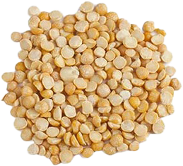
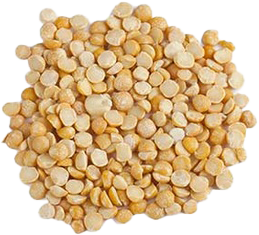
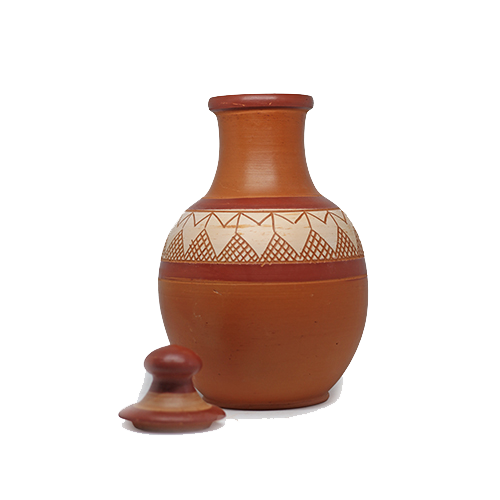
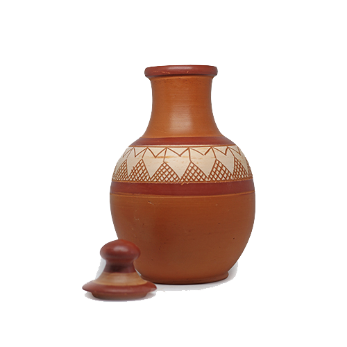

Our Products
Seed Products
 



We are conducting this seed project in order to gain the prosperity to country With the guidance of Agricutural department & the theme of Green srilanka. Here we are selling short term crops which can gain harvest in a short period of time. Mainly mung bean, gram, cowpea, rice, pumking can be found here.
Paper Products


currently plastic & polythin became a huge problem to whole world. So as a solution for that we have ability to manufacture eco friendly papers which we can use as shopping bags, food & beverage packages. You can buy those paper packages for your relevent purposes. Becasue we manufactured them under the rules & regulations of the government.
Clay products

 



We have indroduced several clay items which will be an alternative for plastics as a solution for environmental pollution caused by plastics.With the idea of gaining an additional income to the country we produce high quality clay items with the accepatance of goverment & encouraging local manufacturers. Here you can buy various high quality items like kitchen items, flower pots, lamps, clay statues etc.
Feeding boxes
Nowadays we can see animals like dogs, cats all around the towns, roads which trying to seek some foods for there hungry. By targetting to provide foods for those animals, we started this product which we can place in towns, roads accordingly.
Organic Fertilizers


The main reason for large number of Non-communicable diseases are artificial fertilizers which contains various harmfull materials. Even water resources also polluted With those fertilizers. As a solution for that we introduced several eco friendly organic fertilizers for the farmers in the agricultural industry. Here you can buy liquid fertilizer as well as soild fertilizer according to your purpose.